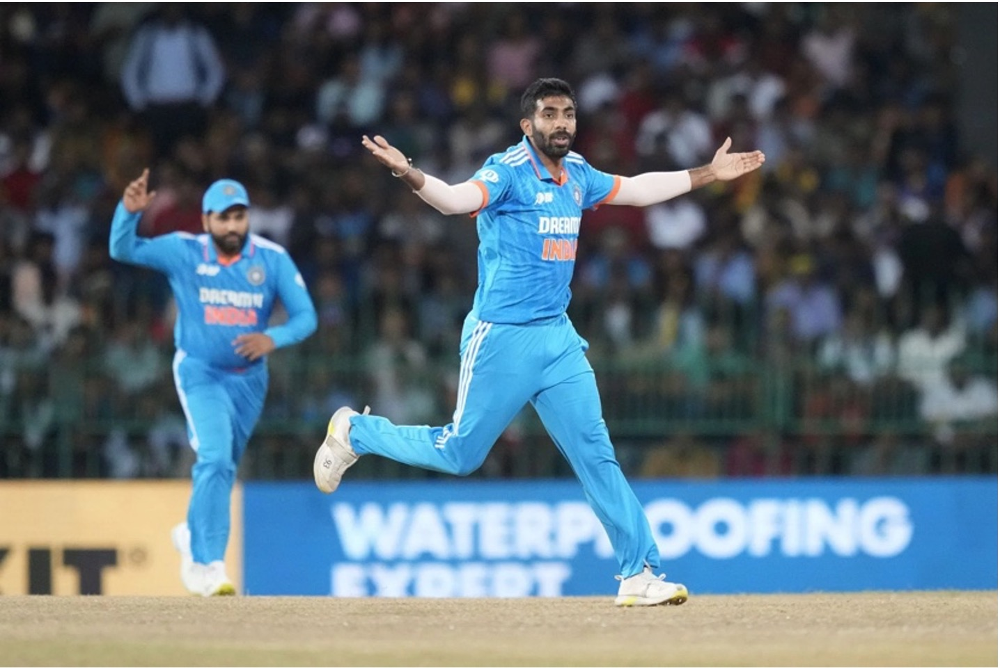

To Bowl or not to Bowl
Always bowl first. That’s a phrase my dad has heard and rolled his eyes at more times than he can count in the last few years. As a kid growing up in India, my dad listened on the radio to lots of cricket commentary…